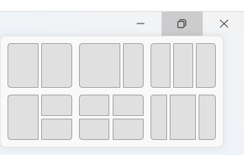

Windows 11 adds a variety of unique and useful features for its users, with a focus on providing better
organization and enhancing productivity for its users. It has made many improvements and additions; from a
new and improved look/layout to widgets that keep users informed. Here are some of the most notable features
added in Windows 11.
New Look/Layout
Perhaps the most noticable change in Windows 11 is its new look and layout. The first thing you may notice is
that the taskbar icons are now centered, making the screen more symetrical. Don't worry, the start menu is
still to the left of the other icons in the task bar, so it is still easy to find! Another thing to note is
that the window corners are rounded, giving them a softer look. Check out this video from Microsoft
discussing the new look and feel of Windows 11.
Introduced in Windows 7, snapping windows has always been a useful feature for multitaskers. It allows you to
easily view multiple windows at once on the same screen. Windows 11 provides preset layouts that allow you
to choose where you want a window to be displayed. This allows you to easily manage where to display a
window and prioritize windows by choosing which ones get more space on the screen. Snap groups are a
collection of open windows that are organized in a snap layout. These groups appear as a single icon on the
task bar, making it easy to switch between tasks that require multiple windows.

Widgets
Another new feature from Windows 11 is widgets. Widgets are small boxes on your desktop that display specific
and relevant content such as the weather, news, sports games, etc. Windows 11 lets you choose which widgets
from the widgets board you'd like on your desktop and it lets you resize them. This feature makes it easier
for you to stay up-to-date on real world information as well as grants users more freedom in customizing
their desktops.
Android Apps
Windows 11 comes with Windows Subsystem for Android, which allows users to use Android apps downloaded from
the Amazon Appstore. Now you can play Android games on your Windows 11 device. This feature allows users to
experience Android apps in a new way by providing mouse and keyboard functionality. It is also a great tool
for developers to test and debug their apps right on their desktop or laptop.